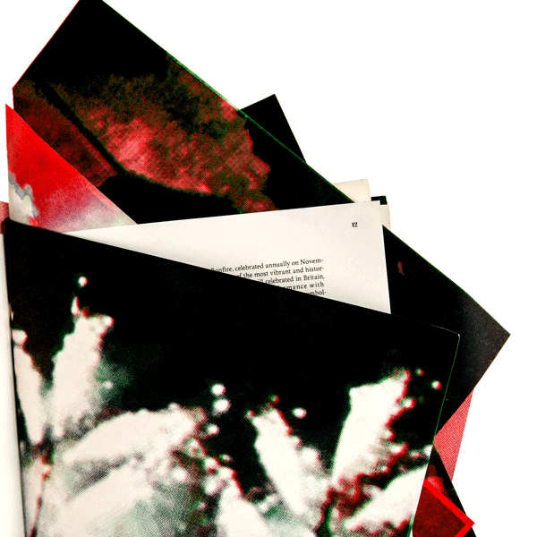
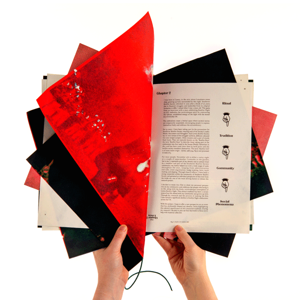

Flames of Tradition
Flames of Tradition is a publication developed from my dissertation film and writing on the national decline of Bonfire Night. Structured like a Lewes bonfire, it features descending paper stock, a firework fuse binding, and magician’s flash paper designed as a piece that, ultimately, returns to the fire.


